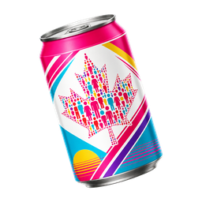

SynthPopCan
Local synthetic population workspace
Local
IPF from margin tables
Guided setup or file uploadChoose one setup path
Both paths prepare the same two IPF inputs: a seed CSV and a normalized margin/control CSV.
Path 1
Use a demo or make templates
Load a tiny example immediately, or create blank CSVs to fill yourself.
Path 2
Generate from a StatCan table
Search by plain words, inspect a product ID, then generate matching seed and control CSVs.
IPF inputs and controls
Use files prepared above, or choose your own seed and margin/control CSVs here.
Generate from existing model
Model JSON or linked package JSONLoad a prepared model JSON or linked household/person package, inspect it, then generate synthetic rows in the browser.